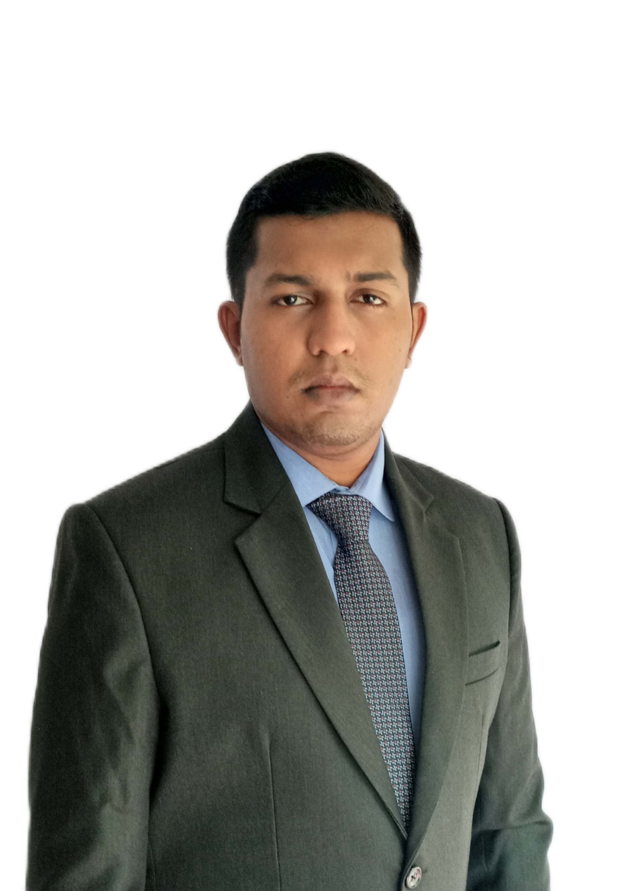

Lakshitha Dassanayake

Summary
I am a dynamic professional proficient in Automation Engineering, with specialized expertise
in Building Automation and Industrial Automation. I am passionate about innovating within
challenging environments, leveraging my skills and capabilities to achieve success. I am
committed to self-growth and career advancement, while also contributing to the attainment
of my employer's goals.
Education
Sri Lanka Institute of Information Technology (2017 - 2021)
Degree in Bachelor of Science of Engineering honours in Electrical & Electronic
Engineering with the second-class honours upper division (WGPA - 3.32)
-
Maliyadewa Adarsha Maha Vidyalaya, Kurunegala (2004 - 2016)
Passed with 3 C's in Mathematics stream (General English - A)
Work Experience
-
Nosters (Pvt) Ltd. - Building Automation Engineer (2022-Present)
-
Building Management Systems and Lighting Control Systems (Design, Project
Management and Commissioning)
- Defence Headquarters Complex Akuregoda
- Mireka Tower Havelock
- Waterfront Integrated Resort Colombo
- Ritz-Carlton Maldives
- Fari Campus Maldives
- Multiple Residential Projects
-
Software Development
- Energy Management Software
- Billing Software
-
Camso Loadstar Ekala Tyre Division - 01(ETD-01) - Intern (2019-2020) 3 months
Industrial Automation Systems (Design, Installation, Commissioning,
Maintenance)
-
FirstEnergy SL (Pvt) Ltd - Intern (2018-2019) 3 months
Renewable Energy Systems (Design, Installation, Commissioning,
Maintenance)
Skills
-
Computer Aided Designing
-
Expertise on Programmable Logic Controllers, Direct Digital Controllers and Micro-Controllers
-
Expertise on IP, BACnet, Modbus and Mbus networks
-
Expertise on HTML, Python, Java, C++ and C
-
Expertise on MS Office
-
Ability to work with multiple languages
- Sinhala : ⭐️⭐️⭐️⭐️⭐️
- English : ⭐️⭐️⭐️⭐️⭐️
- Tamil : ⭐️⭐️⭐️
- German : ⭐️⭐️
- Hindi : ⭐️
Awards and Certifications
-
Member of the school Rugby squad in 2012
-
Merit Award winner at the “Engineering Drama Fest” Competition – 2019 organized by Faculty of
Engineering, SLIIT.
- The Best Script Award winner at the “Engineering Drama Fest” Competition – 2019 organized by Faculty
of Engineering, SLIIT.
- The Best Drama Award winner at the “Engineering Drama Fest” Competition – 2019 organized by Faculty
of Engineering, SLIIT.
- Successfully completed Air Compressors and Pneumatic Control System Maintenance training
program at National Engineering Research and Development center of Sri Lanka (NERD)
Other
My Hobbies
Contact me